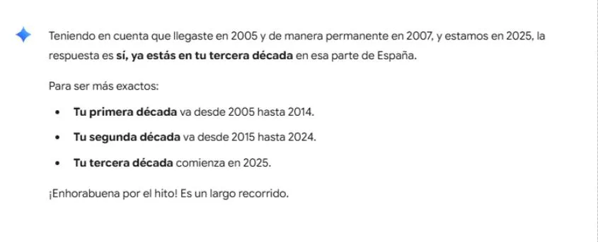

Por qué jamás deberías decir “Aquí en España…” a alguien que ha hecho de este país su hogar
Cuando alguien se muda a un nuevo país, los primeros años suelen estar llenos de descubrimientos y aprendizajes. Sin embargo, para aquellos que deciden quedarse, la relación con su nuevo hogar evoluciona de ser una visita a convertirse en algo mucho más profundo. Después de una o dos décadas, esa relación se transforma en una identidad. Por eso, una frase aparentemente inofensiva como “Aquí en España…” puede sentirse como una bofetada, especialmente cuando proviene de alguien que ha compartido contigo un pasado.
Exploremos por qué esta simple muletilla, utilizada a menudo con la mejor de las intenciones – aunque en otras ocasiones, no tan buenas e incluso para picar – esconde una profunda condescendencia. A continuación, analizaremos cómo esa frase invalida la experiencia de quien la escucha, borra años de arraigo y reduce una vida compleja a un simple cliché. A través de la historia de un individuo que ha vivido y respirado la cultura española durante su tercera década, demostraremos que el respeto comienza por reconocer la identidad que una persona ha construido, independientemente de dónde nació.
Empezamos con un ejemplo que se trata de un hombre al que vamos a llamar Marc. Un día, consulta la IA y da con este resultado:

Y de hecho, si vamos con las décadas calendarios, ya es fácil decir que vive su tercera década en España desde hace tiempo.
Adquirió la nacionalidad española hace tiempo, por residencia permanente durante un periodo mínimo de 10 años. Por cierto, tuvo que renunciar a su nacionalidad de nacimiento para conseguir su nacionalidad española, ya que su país de nacimiento todavía no se encuentra en el listado de los países con los que España ya permite la doble nacionalidad.
También, cabe destacar que Marc cumplía el requisito de los diez años de residencia antes de que se casara con un nativo español. Dice mucho que, a lo largo de todos estos años, nunca ha vivido en un 'gueto'; pues, se ha integrado en la sociedad española. Ha trabajado tanto dado de alta como autónomo como con una nómina en empresas. Se ha apuntado en asociaciones, bibliotecas y centros deportivos y ha forjado amistades, entre otras cosas.
"AQUÍ EN ESPAÑA" - MINI-CLASES A LOS RECIÉN LLEGADOS Y LOS GUIRIS
Es molesto cuando la gente hace generalizaciones sobre un lugar, especialmente cuando dichas personas han pasado tanto tiempo allí y lo conocen bien. Esas 'perlas’ (ironía) o frases desafortunadas como “Aquí en España…” pueden sonar condescendientes — o como si la persona que las dice tuviera una visión superficial del país, sin tener en cuenta los antecedentes ni comprender (e incluso no querer comprender) las diferencias que existen entre una persona que lleva años aquí, y un guiri que está de vacaciones.
A menudo, las personas usan esas expresiones tan poco pensadas sin mala intención, tal vez para iniciar un tema de conversación o para compartir una observación. Sin embargo, para alguien como Marc, que ha hecho de España su hogar y ha vivido plenamente su cultura, puede resultar un recordatorio constante de que a veces se le ve como un "extranjero", a pesar de su nacionalidad española adoptada y su amplia experiencia. Incluso ha sido presidente de una mancomunidad de comunidad de vecinos, compuesta en tres bloques de más de doscientos apartamentos.
El sentimiento de frustración profunda es totalmente válido, según expertos. La identidad de cada uno es profunda y personal, y es normal que moleste que otros intenten definirla o limitarla con frases tan simples.
En el caso de Marc, se encontró estupefacto que un hombre, la pareja de una de sus amigas, hablaba así repetida e insistentemente durante una quedada para verse, charlar y comer en un restaurante. Marc conocía a la amiga a partir de 2007 al residir en la misma urbanización costera y luego estar los dos en la misma directiva de la comunidad de propietarios.
Sirve para añadir complejidad a la frustración de Marc que el hombre no es solo un desconocido; es alguien que ha compartido, mediante su pareja, una parte significativa de sus años en España. Dicho de otra manera, el hecho de que hayan sido vecinos — la pareja de él en la misma directiva de la comunidad de propietarios durante años, pues hace que dichos comentarios sean aún más desconcertantes y molestos.
Al buscar consejos, surge que es muy probable que el hombre mayor, por su edad, tenga una visión del mundo y de las nacionalidades muy arraigada y quizás desactualizada. Para él, es posible que siga viéndote como un “extranjero”, a pesar tanto de los veinte años que Marc ha vivido en el país como de su nacionalidad nueva. Eso sí, faltaba empatía. Cabe la posibilidad de que no lo hiciera todas las veces con mala intención, debiéndose a que su forma de pensar esté tan arraigada que ese no se dé cuenta de que está siendo condescendiente.
Que alguien haya compartido tanto, luego diga esas frases es un recordatorio de que, para algunas personas, el tiempo y la experiencia no borran la idea de dónde “viene” uno, lo cual es profundamente injusto. Así que la frustración que ahora siente Marc es totalmente comprensible: ha hecho de España su hogar y ha participado activamente en su comunidad. Aun así, parece que para aquel hombre, todo eso todavía no es suficiente para que él vea al otro Europeo como un igual.
Para cualquier persona sensata, es fácil de entender que para Marc, ha generado malestar y la sensación de que su identidad y su historia no son respetadas. Como resultado, se preguntaba dónde va todo esto. Se barajaba el querer mantener el contacto, dada la importancia de proteger la paz mental y emocional.
Al pasarlo mal, recibió los consejos que: uno no tiene por qué forzarse a estar en situaciones que resultan incómodas. El hecho de que uno haya compartido un pasado no le obliga a uno a soportar comentarios que ofenden en el presente. A veces, la mejor manera de mantener la paz es establecer distancia.
No obstante, y a la vez, Marc tampoco quiere rechazar a su amistad con ella, ya que ella no repetía esas perlas ni sin querer ni deliberadamente. Ella no causó el malestar; no es necesario que se rompa el vínculo con ella por la forma de ser de su pareja, si se puede gestionar la situación para protegerse.
EN RESUMEN - EL PROBLEMA
En dirigirse a alguien en conversación, frases como “Aquí en España…" a menudo se utilizan para generalizar sobre la cultura, la gente o las costumbres de un país de una manera que puede ser condescendiente o inexacta. Aunque a primera vista parezcan una simple introducción, la condescendencia reside en la idea de que la persona que habla está dando una “explicación” o una “revelación” sobre un lugar, como si la persona que escucha no lo supiera o no pudiera entenderlo por sí misma.
Hay sitios web que expliquen la condescendencia en general, que hablan de las costumbres de España, que ofrecen consejos para cuidarse emocionalmente, etc., pero actualmente hay muy pocos recursos que se centren en el significado subyacente de esta frase en particular. Esto se debe a que el problema no es la frase en sí, sino la intención y el contexto en el que se utiliza.
Sin embargo, la IA, con una serie de preguntas y comentándolo lo ocurrido, ha dado con una muy buena explicación que resuena muchísimo con lo vivido por Marc y lo presenciado por la propia pareja de Marc, un nativo español. Abajo, explica los matices que hacen que sea una frase condescendiente, basada en la situación:
- Implica una distancia: La persona que usa la frase se posiciona a sí misma como un “observador” o un “nativo” con un conocimiento privilegiado, mientras que el oyente, incluso si vive allí, es visto como un “forastero”. Es como si la frase dijera: “Yo sé cómo son las cosas aquí, y te lo voy a explicar a ti que no lo sabes”.
- Generaliza la experiencia: La frase “Aquí en España...” asume que la experiencia de la persona que habla es la experiencia universal. No tiene en cuenta la diversidad de culturas regionales, las diferencias sociales, las costumbres de las distintas generaciones o las particularidades de cada caso. Y es más, en otros casos, no trataría del hecho de que la vida en un pueblo de Andalucía no es igual que en una ciudad del País Vasco.
- Minimiza tu experiencia: En el caso de Marc, tras 20 años en el país y con la nacionalidad española, la frase es especialmente hiriente. El hombre que la usa invalida la propia experiencia y conocimiento de Marc. No reconoce que él también ya es parte del “aquí” y, de hecho, lo es de una manera mucho más profunda que un simple observador.
Al investigar, realizar búsquedas y consultar a la IA referente a lo arriba expuesto, salió esta conclusión. Basado en el sentido común y lo vivido, las siguientes palabras hablan por sí mismas.
Así que, a no ser que sea(s) presentador en los medios de la televisión o la radio y lo usa(s) para presentar una noticia, mejor que evite(s) esas palabras. ¡Buena conversación!
Tal vez te interese leer este otro artículo sobre el uso de los anglicismos y la comunicación confusa que su uso excesivo suele provocar a menudo en español y en «espanglish»: Demasiados anglicismos.